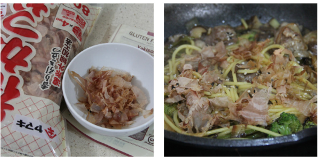

1. Cortamos el 1 pimiento verde en trozos y el puerro en rodajas de 4cm. Los freímos a fuego vivo con un 3 cucharas de aceite de oliva y unas gotas de 1 pizca de aceite de sésamo en un wok o en una sartén honda hasta que se doren. A continuación agregamos los trozos de brócoli cortando las 8 piezas de arbolitos por la mitad.
2. Incorporamos 150g de carne de cerdo iberico, cortada en porciones que sean fáciles de comer. También añadimos los 100g de setas y cocinamos el conjunto hasta que todo haya comenzado a tomar color. En ese momento, agregamos 4 cucharas de la salsa soja y salteamos para que todos los ingredientes se impregnen. Agregamos el 400ml de caldo de verduras (o si lo preferís, también podéis utilizar un buen caldo de pollo), y dejamos que cueza a fuego vivo.
3. Mientras se cocina todo a fuego máximo en la sartén o wok, ponemos a cocer los 200g de pasta yakisoba sin gluten y cuando recupera el hervor, contamos tres minutos. Sacamos la pasta del cazo y la pasamos a la sartén donde tenemos el resto de ingredientes en marcha y dejamos que cueza todo junto durante un minuto más.
4. Servimos en platos hondos y espolvoreamos con unas semillas de sésamo y con unos copos de katsuobushi, que darán un toque muy especial a esta receta de pasta de inspiración oriental, apta para celíacos y que gustará a todos. Por supuesto, puedes adaptar los ingredientes del salteado a tus gustos y a lo que tengas en casa.
 Volver al inicio
Volver al inicio